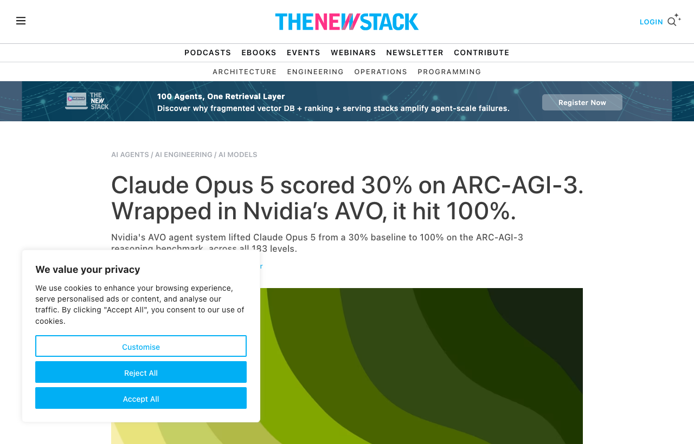

08 The New Stack 게시일 2026.08.21
엔비디아 AVO, ARC-AGI-3 100점 달성

좋은 모델을 고르는 일만으로 에이전트 성능이 결정되지는 않는다. 엔비디아는 그 차이를 벤치마크 수치로 보여줬다. Claude Opus 5를 AVO라는 에이전트 시스템으로 감쌌더니 ARC-AGI-3 점수가 크게 뛰었다는 내용이다.
방법과 결과
AVO는 기존 진화 탐색 시스템의 미리 정한 variation step을 에이전트로 바꿨다. 에이전트가 무엇을 볼지, 무엇을 바꿀지, 무엇을 시험할지, 무엇을 커밋할지를 스스로 정한다. 팀은 이 구조를 GPU 커널 최적화에서 먼저 다듬었고, 그 뒤 ARC-AGI-3로 옮겼다.
저자들은 두 과제가 겉보기보다 닮았다고 봤다. 둘 다 불완전한 정보에서 가설을 세우고, 외부 인터페이스로 행동한 뒤 결과를 관찰한다. 그러면서 문제 모델을 수정하고 잘못된 가정을 복구하며, 긴 구간에서 계속 진전해야 한다.
결과 수치는 다음과 같다.
| 대상 | 측정 주체 | 평가 조건 | 결과 |
|---|---|---|---|
| Claude Opus 5 단독 | ARC Prize | ARC-AGI-3 public set, high reasoning effort | 30.2% |
| Claude Opus 5 | ARC Prize | ARC-AGI-1, Max reasoning effort | 97.5% |
| Claude Opus 5 | ARC Prize | ARC-AGI-2 semi-private, Max reasoning effort | 90.4% |
| AVO + Claude Opus 5 | Nvidia 팀 블로그 | ARC-AGI-3 public set, 25 environments, 183 levels | 100.00 RHAE |
시사점과 체크포인트
우리 회사가 얻을 교훈은 모델 교체보다 운영층 설계가 더 큰 차이를 낼 수 있다는 점이다. 메모리, 도구, 감독, 복구 로직을 어떻게 붙이느냐가 장기 업무 자동화 성능을 좌우할 수 있다.
검토 포인트를 실무로 옮기면 이렇다.
- AI 플랫폼팀: 에이전트가 중간 상태를 얼마나 오래 보존하는지
- 업무시스템팀: 실행 결과를 검증하는 루프가 있는지
- 보안팀: 감독 모듈이 위험 행동을 중단시킬 수 있는지
- 현업 부서: 긴 절차를 작은 단계로 나눠 도구화할 수 있는지
벤치마크 해석은 신중해야 한다. 100.00은 엔비디아 팀 블로그 결과다. 공개 세트 기준이며, 비공개 경쟁 세트 결과는 아니다. 독립 재현과 비용 정보가 없으므로, 이 수치만으로 현업 성능을 단정하면 안 된다.
그래도 방향성은 분명하다. 문서 검색, 코드 수정, 명령 실행, 결과 검증처럼 여러 단계를 거치는 업무라면, 단일 모델 점수보다 에이전트 시스템 설계를 먼저 점검하는 편이 실익이 클 수 있다.
주요 용어
원문 정보
제목: Claude Opus 5 scored 30% on ARC-AGI-3. Wrapped in Nvidia's AVO, it hit 100%.
게시일: 2026.08.21
출처 URL: https://thenewstack.io/nvidia-avo-arcagi3-benchmark/